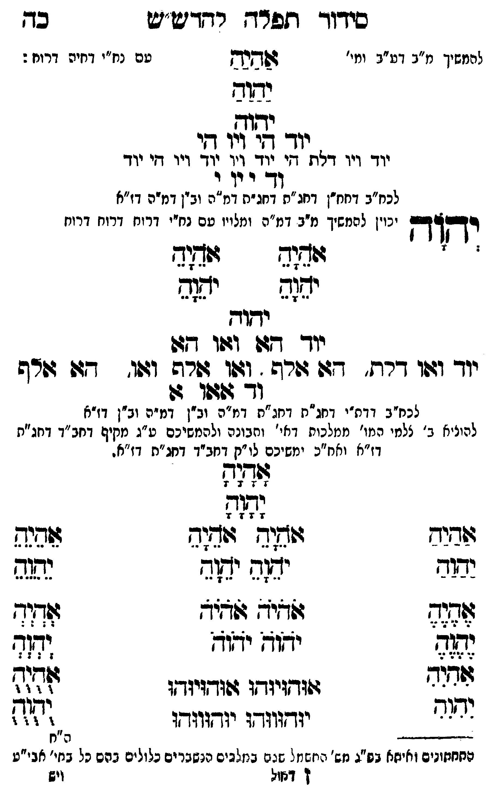

Neue Klartextfassung
[להמשיך מ"ב דע"ב ומי' עם נח"י דחיה דרוח:] אַהַיַהַ יַהַוַהַ יהוה יוד הי ויו הי יוד ויו דלת הי יוד ויו יוד ויו הי יוד וד י וי י [לכח"ב דחח"ן דחג"ת דחג"ת דמ"ה וב"ן דמ"ה דז"א] יְהוָה [יכוין להמשיך מ"ב דמ"ה ומלויו עם נח"י דרוח דרוח דרוח] === טבלה === [טור ימין] אָהָיָהָ יָהָוָהָ [טור אמצעי] [טור שמאל] אָהָיָהָ יָהָוָהָ === סוף טבלה === יהוה יוד הא ואו הא יוד ואו דלת, הא אלף, ואו אלף ואו, הא אלף וד א או א [לכח"ב דדת"י דחג"ת דחג"ת דמ"ה וב"ן דמ"ה וב"ן דז"א] [להעלות ב' צלמי המו' ממלכות דאי' ותבונה ולהמשיכם ע"ג מקיף דחב"ד דחג"ת דז"א וחו"ב ימשיכם לו"ק דחב"ד דחג"ת דז"א.] === טבלה === [טור ימין] אַהַיַהַ יַהַוַהַ אֶהֶיֶהֶ יֶהֶוֶהֶ אִהִיִהִ יִהִוִהִ [טור אמצעי] אָהָיָהָ יָהָוָהָ אֹהֵיָהֵ אֹהֵיָהֵ יֹהֵוָהֵ יֹהֵוָהֵ אֹהֹיֹהֹ אֹהֹיֹהֹ יֹהֹוֹהֹ יֹהֹוֹהֹ אוּהוּיוּהוּ אוּהוּיוּהוּ יוּהוּווּהוּ יוּהוּווּהוּ [טור שמאל] אֵהֵיֵהֵ יֵהֵוֵהֵ אְהְיְהְ יְהְוְהְ אֻהֻיֻהֻ יֻהֻוֻהֻ === סוף טבלה ===
Original gegen neue OCR · Niqqud für Vergleich ausgeblendet
Original
[להמשיךK054-001 מ"ב דע"בK054-002 ומי' עםK054-003 נח"י דחיה דרוח:] אהיה יהוה יהוה יוד היK054-004 ויו היK054-005 יוד ויו דלת היK054-006 יוד ∅K054-007 ויו ∅K054-008 יוד ויו הי יוד ודK054-009 י ויK054-010 י [לכח"בK054-011 דחח"ן דחג"ת דחג"תK054-012 דמ"ה וב"ן דמ"ה דז"א] יהוה [יכויןK054-013 להמשיך מ"ב דמ"ה ומלויו עםK054-014 נח"י דרוח דרוח דרוח] === טבלה === [טור ימין] אהיה יהוה [טור אמצעי] [טור שמאל] אהיה יהוה === סוף טבלה === יהוהK054-015 יוד הא ואו הא יוד ואו דלת, הא אלף, ואו אלף ואו, הא אלף וד א או א [לכח"בK054-016 דדת"י דחג"תK054-017 דחג"ת דמ"ה וב"ן דמ"ה וב"ן דז"א] [להעלותK054-018 ב' צלמי המו' ממלכותK054-019 דאי' ותבונה ולהמשיכם ע"ג מקיף דחב"ד דחג"ת דז"א וחו"בK054-020 ימשיכם לו"ק דחב"דK054-021 דחג"ת דז"א.] === טבלה === [טור ימין] אהיה יהוה אהיה יהוה אהיה יהוה [טור אמצעי] אהיה יהוה אהיה אהיה יהוה יהוה אהיה אהיה יהוה יהוה אוהויוהו אוהויוהו יוהוווהו יוהוווהו [טור שמאל] אהיה יהוה אהיה יהוה אהיה יהוה === סוף טבלה ===K054-022
OCR · fehlbar
סידוךד ותזפדרךח רדדיש"ע בך להמשיךK054-001 מ"ב דע"גK054-002 ומי' פדנן טםK054-003 נח"י דחיה דרוח : ימוב וג יוך לי'K054-004 ויו דיK054-005 יוד ויו דלת דיK054-006 יוד וך גוךK054-007 ויו דיK054-008 יוד ד'K054-009 י ווK054-010 י לכח"בK054-011 דחח"ן דחג"ת דחג"חK054-012 דמ"ה ובין דמיה דז"א 23243 יכויןK054-013 להמשיך מ"ב דמ"ה ומלוין טםK054-014 נח"י דרוח דרוח דרוח - זודוד זו[(ד יזג2ש ידזש ישוד יוך [4ו וגדפו דג(K054-015 יוד וזוו דרז' 7: ורש . וז(ו ג(רה וווו. -17 ערש וך 497פו גו לכח"בK054-016 דדת"י דחג"חK054-017 דחג"ת דמ"ה וב"ן דמ"ה וב"ן דז"א להוניאK054-018 ב' צלמי המו' ממלכוחK054-019 דאי' ותבונה ולהמשיכם ע"ג מקיף דחב"ד דחג"ת דז"א ואח"כK054-020 ימשיכם לו "ק דנזב"דK054-021 דחג"ת דז"א . [לאזז6 [ז:))] ושיש זש זוד(ש אהנג נבוב יגד יד[ד יזש לללצל [לללללל לל 3. ידו "יי' ל[ ש דזי ל( זודיודו ו(ודויודו ללל ז' יודזוודו יודווזדו לזי)) ) ----- ה"ח חחחזוניב ואיזא בש"ג נזש' היזשנזל שגגי בנזלגים נשברים כלולים בהם כל בחי' אגי"ט 1 דאזל וישK054-022